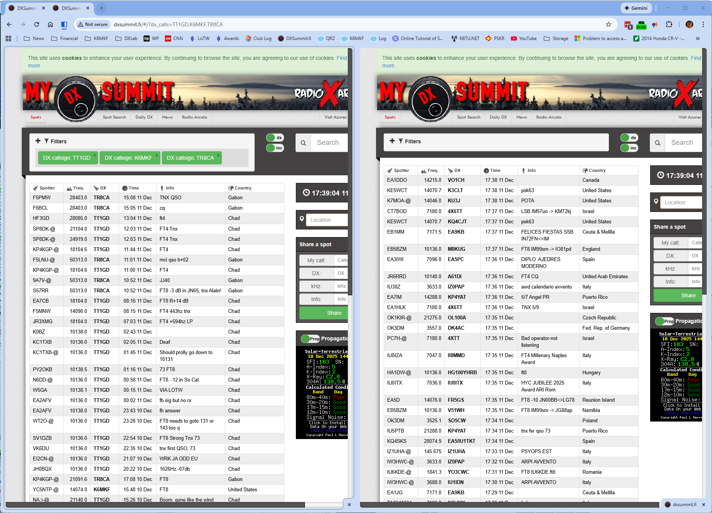

|
With a recent Chrome update, I discovered that I could combine two DXSummit tabs to show a callsign specific and a general view side-by-side.

I find this very useful when tracking active DXpeditions while keeping an eye on overall DX activity.
|